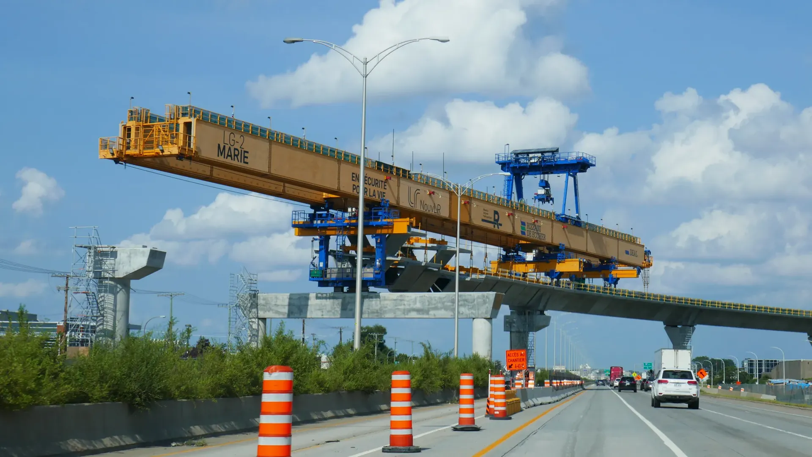

Imagen de referencia · Clump, CC001
Renta y operación de lanzadora
Suministramos la lanzadora con su ingeniería, la movilizamos a obra, la montamos, la ponemos en marcha y la operamos con personal especializado.
- Montaje claro por claro
- Commissioning y pruebas de carga
- Operación y mantenimiento en obra

 IzamosHeavy Lift · izajes pesados
IzamosHeavy Lift · izajes pesados IzamosGantry · pórticos hidráulicos
IzamosGantry · pórticos hidráulicos IzamosJack & Slide · gateo y deslizamiento
IzamosJack & Slide · gateo y deslizamiento PlaneamosIngeniería de maniobras
PlaneamosIngeniería de maniobras